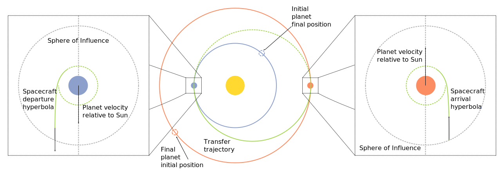

Sphere of Influence#
As we discussed in the introduction to this chapter, the method of patched conics requires us to patch together three trajectories, two about the planets and one about the Sun. In the preceding two sections, we determined the parameters of the heliocentric portion of the method and we will now move on to the planetary trajectories.
In this context, it is helpful to define where the planetary trajectories start and end. Newton’s law of motion shows us that the force on a spacecraft varies inversely with the distance from all of the masses in a system. However, the method of patched conics requires us to have distinct starting and ending points for the trajectories.
To define the start and end of the planetary trajectories, we define the sphere of influence of each planet. The sphere of influence is illustrated by the dashed gray lines in Fig. 76, repeated here for reference.
{kind=link}
Conceptually, we can imagine the sphere of influence as a boundary, inside of which the planet’s gravitational pull dominates the pull of the Sun on a much smaller mass. This allows us to estimate a specific radius beyond which the focus of the trajectory switches from the planet to the Sun. Therefore, the velocity that the spacecraft has when it leaves the sphere of influence of a planet is the velocity that it starts with on its heliocentric trajectory.
Estimating the Sphere of Influence Radius#
Let’s consider a three body system, consisting of the Sun, the planet, and the spacecraft. An inertial frame is fixed to the Sun and we are interested in the equations of motion of the spacecraft in this frame.
Let \(\vector{R}\) be the radial vector from the Sun to the spacecraft, \(\vector{r}\) be the radial vector from the planet to the spacecraft, and \(\vector{R}_p\) be the radial vector from the Sun to the planet. Then the equation of motion of the spacecraft in the inertial frame of the Sun is:
where \(m\) is the mass of the spacecraft and \(\vector{F}_s\) and \(\vector{F}_p\) are the forces on the spacecraft due to the Sun and the planet, respectively. Dividing through by the spacecraft mass, we find:
In Eq. (342), \(\vector{A}\) is the primary acceleration vector, which is due to the Sun in the inertial frame. On the other hand, \(\vector{P}\) represents the perturbing acceleration vector, which is due to the planet.
Next, we need to write the equations of motion of the spacecraft in a moving reference frame relative to the planet:
Dividing through by the mass again, we find:
In Eq. (344), \(\vector{a}\) is the primary acceleration vector, which is due to the planet in the relative frame. On the other hand, \(\vector{p}\) represents the perturbing acceleration vector, which is due to the Sun.
Eq. (342) and Eq. (344) show us that we can think of the accelerations of the spacecraft in terms of a primary acceleration and a perturbing acceleration. Taking the ratio of the magnitudes of these accelerations, we can draw two main conclusions:
When \(p_s/a_p\) is large, then the spacecraft trajectory is significantly perturbed by the gravity of the Sun
When \(P_p/A_s\) is large, then the spacecraft trajectory is significantly perturbed by the gravity of the planet
By comparing these two ratios, we can compare the perturbing influence of the Sun with the perturbing influence of the planet. When the Sun’s perturbation is less than the planet’s perturbation, the spacecraft must be within the sphere of influence! Mathematically, we say:
The acceleration magnitudes are given by:
where \(m_p\) is the mass of the planet and \(m_s\) is the mass of the Sun. Note that we are assuming that \(R = R_p\). In other words, inside the sphere of radius, the distance from the Sun to the spacecraft is the same as the distance from the Sun to the planet. In addition, we are interested in the situation where the position of the spacecraft relative to the planet, given by \(r\), is equal to the sphere of influence radius, such that \(r = r_{\text{SOI}}\).
Plugging Eq. (346) into Eq. (345) and simplifying, we find:
where \(R\) is the radius of the planet’s orbit around the Sun. Eq. (347) shows that \(r_{\text{SOI}}\) is proportional to the orbital radius and the planet’s mass. Larger planets or planets that are further away from the Sun have larger spheres of influence. Since the sphere of influence is based on a balance between the planet and the Sun, this interpretation makes sense.